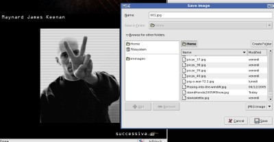

Dec
17
2005

tripz
Ieri un amico mi chiede di aprirgli ftp perche’ potesse provare l’ebbreezza di scaricare DALLA LARGA BANDERA!
Ok…
SoliDa procedura:
vim /etc/inetd.conf scommenta la riga di proftpd :wq killall -HUP inetd
ftp localhost per provare:
‘connected to localhost….’
dopo qualche secondo invece di darmi user:
MUORE
AH!
PROFTPD MUORE?
MMMMMMMMMMM….
ps aux|grep proftpd
IL VUOTO
Penso, ok e’ crashato e la cosa e’ triste molto.
MA LA PORTA 21 E’ APERTA!
SWINE BIZARRO_JESUS!
fuser 21/tcp
da un processo…
ps aux |grep $processo_ottenuto
FIREFOX-BIN!!!!!!!!!!!!!!!!!!!!!!!!!!!!!!!!!!!!!!!!!!!!!
PETO SULLA VOLPE DI FUOCO PER FIAMMARE IDDIO PORCO!
Io ora non voglio sapere, non voglio sapere COME CAZZO FIREFOX SI BINDA LA 21, DA UTENTE!
PORCODDIO!
Dec
17
2005

sand
I soldi porco dio addolorato vanno tenuti sotto la mattonella del pavimento sotto la libreria, PORCO DIO, non alle POSTE ITALIANE DI MERDA. Non in quella CACATA DI POSTE ITALIANE DEL CAZZO.
Spariscono i soldi, SENZA LASCIARE TRACCIA.
Il “gruppo” POSTE ITALIANE ???? IL GRUPPO DEI MIEI COGLIONI SFRANTI, PORCO DDIO.
CRISTO MORTO
Dec
16
2005
sand
Da P.I.
Il settore in Italia è vittima di un paradosso, quindi: la tecnologia è già pronta, ottimale per superare il digital divide anche grazie al Wi-Fi; ma la volontà di qualcuno (politici o imprenditori, non si sa) impedisce di metterne in atto le potenzialità.
Spaghetti, mandolino, mafia.
Dec
16
2005
sand
prima tra tutte: e sticazzi? Z I T T O.
La croccante e gustosa pizzetta che dovevo divorare questa mattina, e’ ieri sera caduta ai piedi del mio motorino, porco cristo l’arrotyno. Il sapore di quel forno mi avrebbe accompagnato nelle fredde lande spaccate, e invece NIENTEM, UN CAZZ-OHM, POR-KOD.
E le donne, queste inguaribili TROIE AL VOLANTE, ma quando la finirete mai eh??? SpiritosoneeeeeeeeEE! :)
Dec
16
2005
tripz
Cominciamo la giornata con cappuccino, cornetto e LAMENTAZIONE.
Per ragioni OVVIE non scrivero’ il nome del dominio in questione che verra’ sostituito con l’opportuno nome “BIZARRO_JESUS”.
Ieri chiama il cliente:
AH, NON FUNZIONATE, MORTI! IL MIO DOMINIO BIZARRO_JESUS NON FUNZIONA!
Io controllo nel dns, e non ci sono errori… Controllo in messages e NON ci sono errori di alcun tipo.
Intanto quello smadonna…
Vado su una macchina estranea, pingo BIZARRO_JESUS e non risulta esistere…
Intanto quello smadonna…
Faccio whois BIZARRO_JESUS e mi esce una lunghissima risposta… Leggo…
Intanto quello smadonna…
nserver ovviamente nessuno…
Intanto quello smadonna…
Data di scadenza, ovviamente SBAGLIATA…
Intanto quello smadonna…
Faccio chiamare il NIC per dire PORCODDIO!
Intanto quello smadonna…
Il NIC dice: EH SI’ SCUSATE CI SIAMO SCORDATI DI REFRESHARE DA UN PAIO D’ANNI…
SIAMO SPIACENTI ORA PROVVEDEREMO…
Intanto quello smadonna…
NIC: ENTRO DOMANI MATTINA E’ TUTTO RISOLTO!
Oggi ore 10:00:00
ping: unknown host: BIZARRO_JESUS
E quello continua a smadonnare…
Dec
15
2005
sand
% ps xauw | grep -c thunderbird
16
Evidentemente c’e’ qualcosa di ERRATO.
Forse un desktop minimale con firefox, xmms e thunderbird E’ CHIEDERE TROPPO.
E aggiungo un’altra puntata della serie “FIREFOX TURN INUSABLE”
Salvare un’immagine:
1) click destro
2) save as
3) inserisci il nome o premi invio
ma il file gia’ esiste!
E ti si presentano due scelte:
a) Sovrascrivi.
b) Non sovrascrivi e LA FINESTRA DI SAVE SI CHIUDE. TORNA AL PUNTO 1
Come rovinare le cose funzionanti.
Dec
14
2005

AlpT
Verra’ il giorno in cui il caos e lo spam saranno padroni dei mondi,
e le tenebre festeggeranno la loro vittoria.

=spam [Msgs:34 New:34 1.4M]
Velocita’ instantanea Spam = Vs = 1.4M / 1 gg
Accelerazione Spam = As = 2.7182818284590 M*gg^-2
Dec
14
2005
sand
Giusto ieri e’ stata scritta una mail da LINUS (quello di RINUX e della coperta), in cui parla MALISSIMO dell’interfaccia di GNOME, che secondo lui e’ fatta per idioti e sara’ quindi utilizzata solo da idioti.
GNOME? Perche’ andare tanto lontano, quando i problemi sono gia’ dentro GTK2? Hanno introdotto una nuova finestra di dialogo per aprire/salvare i file, e ovviamente mi hanno rovinato la vita; il vecchio dialogo, GTK1, rozzo ma efficace, era PERFETTO e ti muovevi con il TAB e in pochi istanti facevi tutto…
Ora, NO. Cosi’ come “CTRL+U” e’ diventato ‘View Source” e non “FOTTI LA RIGA“, anche il dialog e’ cambiato, non puoi piu’ fare TAB, e’ orribile, non assomiglia piu’ nemmeno a windows e quindi e’ ANCORA PIU’ anti-intuitivo:
PORCODIO NAMBER UAN:
DIOPORCODIO NAMBER TU’:

MAYNARDO SALVACI TOO(L)!